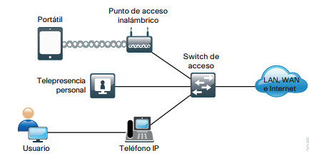
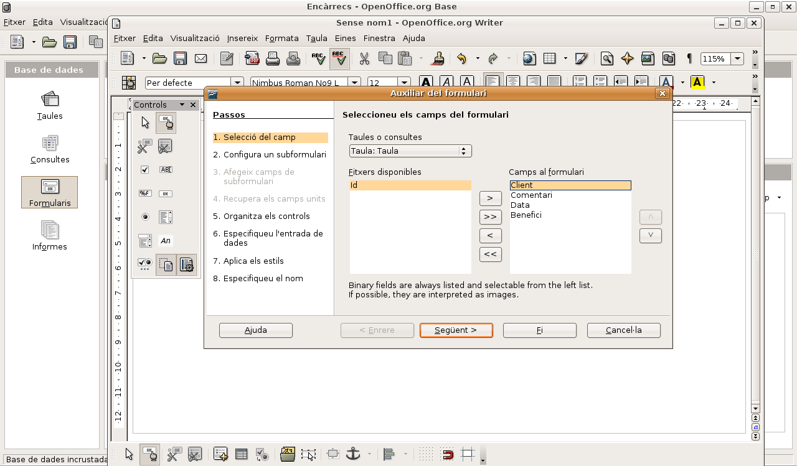
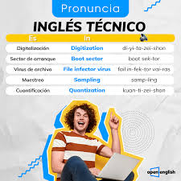

Listado de Proyectos:
Proyecto 1: Sitio web educativo para gestión de proyectos.

Descripcion del Proyecto: Desarrollo de una aplicación con interfaz visual que permite registrar, editar y eliminar tareas. Se aplicaron conceptos de eventos, componentes gráficos y validación de datos.
Categoria: Programación Visual.
Ver Detalle
Proyecto 2: Simulación de red local.

Descripcion del Proyecto: Diseño y configuración de una red LAN básica, incluyendo dispositivos como routers y switches. Se analizaron direcciones IP y comunicación entre equipos.
Categoria: Redes I
Ver Detalle
Proyecto 3: Desarrollo de una aplicación web.

Descripcion del Proyecto: Creación de una aplicación web funcional utilizando tecnologías modernas de desarrollo.
Categoria: Desarrollo Web
Ver Detalle
Proyecto 4: Sistema de gestión de datos académicos.

Descripcion del Proyecto: Diseño de una base de datos relacional para almacenar información de alumnos y proyectos. Se aplicaron consultas SQL para inserción, búsqueda y actualización de datos.
Categoria: Base de Datos II
Ver Detalle
Proyecto 5: Análisis y presentación de un artículo técnico en inglés sobre tecnología.

Descripcion del Proyecto:Lectura y análisis de un artículo en inglés relacionado con desarrollo tecnológico. Se realizó un resumen escrito y una presentación oral, aplicando vocabulario técnico y estructuras gramaticales propias del ámbito académico.
Categoria: Inglés III.
Ver Detalle